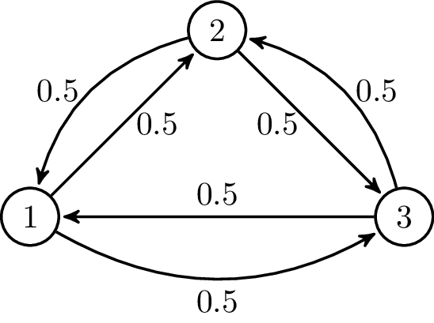

Markov Decision Processes¶
Introduction¶
In RL, we have an agent that interacts with it’s environment. At each time step, the agent will get some representation of the environment’s. Then, the agent selects an action to take. The environment is then transitioned into a new state and the agent is given a reward as a consequence of the previous action.
Any RL task can be defined with the following components:
Agent
States
Actions
Rewards
Markov Chain¶
Markov’s property states that the future depends only on the present, not on the past. A Markov chain is a probabilistic model that represent this kind of approach. Moving from one state to another is called transition and its probability is called transition probability. We can represent a Markov chain as a state diagram:
{kind=link}
Markov Decision Process (MDP)¶
When an stochastic process is called follows Markov’s property, it is called a Markov Process. MDP is an extension of the Markov chain. It provides a mathematical framework for modeling decision-making.
A MDP is completely defined with 4 elements:
A set of states(\(S\)) the agent can be in.
A set of actions (\(A\)) that can be performed by an agent to move from one state to another.
A set of transition probabilities (\(P^a_{ss'}\)), which define the probability of moving from state \(s\) to state \(s'\) by performing action \(a\).
A set of reward probabilities (\(R^a_{ss'}\)), which defines the probability of a reward acquired for moving from state \(s\) to state \(s'\) by performing action \(a\).
Rewards and returns¶
At each time step \(t=0,1,2,...\), the agent receives some representation of the environment’s state \(s_t \in S\). Based on this state, the agent selects an action \(a_t \in A\). The agent’s goal is to maximize the total amount of rewards instead of immediate rewards. The total reward can be formulated as: \(R=r_{t+1}+r_{t+1}+\dots+r_{T}\).
\(r_{t+i}\) is the reward received at time step \(t_{i-1}\) while performing an action \(a_{i-1}\) to move from state \(s_{i-1}\) to state \(s_{i}\).
Episodic VS Continuous Tasks¶
Episodic tasks are those that have a terminal state at time \(T\), which is followed by resetting the environment to its initial state. The next episode then begins independently from how the previous episode ended. TicTacToe is an episodic task, being each episode a round.
In a continuous task, there is not a terminal state. This kind of tasks will never end.
Policy Function¶
A policy function \(\pi\) maps the states to actions. It can be represented as \(\pi(s): S \rightarrow A\). Basically, a policy function says what action to perform in each state. The ultimate goal is finding the optimal policy that results in the correct action to perform in each state maximizing the reward.
State Value Function¶
A state value function (or simply value function) specifies how good it is for an agent to be in a particular state with a policy \(\pi\). The value functions is defined as \(V^\pi(s)=\mathbb{E}_\pi [R_t|s_t=s]=\mathbb{E}_\pi [\sum_{k=1}^{T}r_{t+k}|s_t=s]\). This is the expected return starting from state \(s\) according to policy \(\pi\).
Based on the value of each state, we can tell how good it is for our agent to be in each one.
State |
Value |
|---|---|
State 1 |
0.7 |
State 2 |
0.5 |
State-action Value function (Q function)¶
A state-action value function is also called the Q function. It specifies how good it is for an agent to perform a particular action in a state with a policy \(\pi\). The Q function is defined as
\(Q^\pi(s,a)=\mathbb{E}_\pi [R_t|s_t=s]=\mathbb{E}_\pi [\sum_{k=1}^{T}r_{t+k}|s_t=s,a_t=a]\)
This function specifies the expected return starting from state \(s\) performing action \(a\) according to policy \(\pi\).
State |
Action |
Value |
|---|---|---|
State 1 |
Action 1 |
0.7 |
State 1 |
Action 2 |
0.01 |
State 2 |
Action 1 |
0.5 |
State 2 |
Action 2 |
0.8 |
Note
The difference between the value function and the Q function is that the first one specifies the goodness of a state and the latter specifies the goodness of an action in a state.
Bellman equation¶
The Bellman equation helps us finding the optimal policies and value functions. The optimal value function is the one yielding maximum value compared to all other value functions. Similarly, the optimal policy is the one which results in an optimal value function.
Since the optimal value function is the one that has a higher value, it will be the maximum ot the Q functions: \(V^*(s)=max_aQ^*(s,a)\)
The Bellman equation for the value and Q functions is:
\(V^\pi(s)=\sum_{a}\pi(s,a)\sum_{s'}P^a_{ss'}[R^a_{ss'}+\gamma V^\pi(s')]\)
\(Q^\pi(s,a)=\sum_{s'}P^a_{ss'}[R^a_{ss'}+\gamma\sum_{a'}Q^\pi(s',a')]\)
Finally, the Bellman optimality equation is:
\(V^*(s)=max_a\sum_{s'}P^a_{ss'}[R^a_{ss'}+\gamma\sum_{a'}Q^\pi(s',a')]\)
To solve this equation, two algorithms are used:
Value iteration.
Policy iteration.
Value Iteration¶
The steps involved in the value iteration are as follows:
We initialize the value function randomly.
Then we compute the Q function for all state-action pairs of \(Q(s,a)\).
Then we update our value function with the max value from \(Q(s,a)\).
We repeat these steps until the change in the value function is very small.
Policy Iteration¶
We start with the random policy, then we find the value function of that policy; if the value function is not optimal, then we find the new improved policy. We repeat this process till we find the optimal policy. There are two steps in policy iteration:
Policy evaluation
Policy improvement